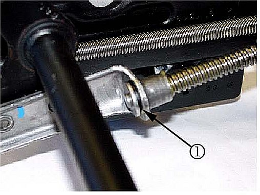
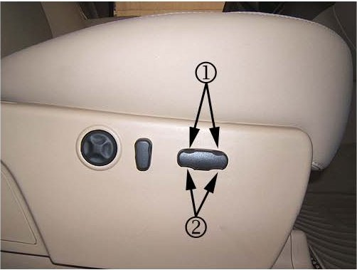
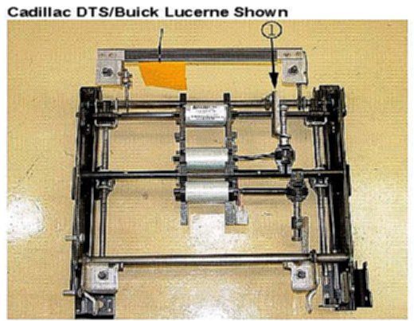
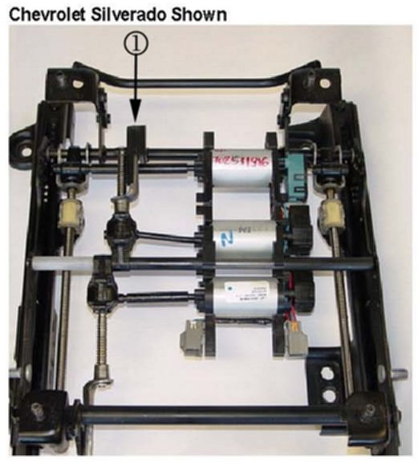
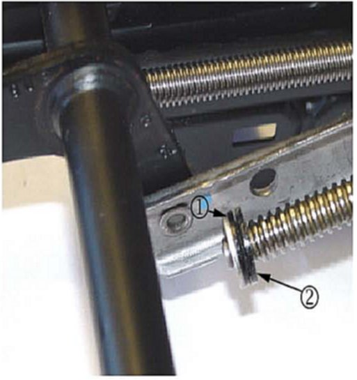

Interior - Power Seat Vertical Motor Inop./Seat Sticks
TECHNICALBulletin No.: 07-08-50-017A
Date: February 22, 2008
Subject:
Front Power Seat Vertical Motor Inoperative, Seat Binds or Sticks in Full Up or Down Tilt Position (Install New Stops)
Models:
2006-2007 Buick Lucerne
2006-2007 Cadillac DTS
2007 Cadillac Escalade, Escalade ESV, Escalade EXT
2006-2007 Chevrolet Impala, Monte Carlo
2007 Chevrolet Avalanche, Silverado, Suburban, Tahoe
2007 GMC Sierra, Yukon, Yukon XL, Yukon Denali, Yukon Denali XL
with Adjuster Front Seat Power, Multi-Directional, Driver or Passenger (RPOs AG1, AG2)
Supercede:
This bulletin is being revised to update the information and the parts quantity. Please discard Corporate Bulletin Number 07-08-50-017 (Section 08 - Body and Accessories).
Condition
Some customers may comment that the front driver and/or passenger power seat up and down adjustments are inoperative. They may also comment that the seat binds or sticks when in the full up or down tilt position.
Cause

The cause may be the nylon stop washer (1) being compressed into the lead tilt adjuster screw when in the full up or down tilt position.
Correction
Install new stops using the procedure below.
1. Verify that the condition is caused by the tilt adjuster screw binding or locked into the full tilt up or down position.
2. Open the hood.
3. Connect a battery charger. Refer to Battery Charging in SI.

4. Toggle the front seat switch down (1) and up (2) with the seat unoccupied. If the seat moves up and down, then proceed to Step 5.

Important:
You may directly apply 16 volts to the vertical motor terminals to unlock the lead tilt adjuster screw from the stop. Refer to Power Seat Connector End Views in SI.
^ If the rear vertical motor is locked, tap the end of the seat track bracket (1) while toggling the rear of the seat switch up and down with the aid of an assistant.

^ If the front vertical motor is locked, tap the front of the seat track bracket (1) while toggling the front seat switch up and down with the aid of an assistant.
5. Move the front seat to the full forward position.
6. Position the rear of the seat halfway up to gain access to the rear tilt seat adjuster stop. For Buick and Cadillac Models, unhook the rear seat trim cover from the rear seat track bar to gain access the rear lead tilt adjuster screw.

7. Locate the rear lead tilt adjuster screw and the old washer stop (1), then install the new stop (2), P/N 25910191 as shown above. For Buick and Cadillac Models, hook the rear seat trim cover to the rear seat track bar.
8. Position the front seat track to the full rear position.
9. Position the front of the seat halfway up to gain access to the front tilt seat adjuster stop.
10. Located the front lead tilt adjuster screw and the old washer stop, then Install a new stop, P/N 25910191 as previously in Step 7.
11. Cycle the seat to the full tilt up and down positions three complete cycles. This cycling will seat the new stops.
12. Verify that the condition has been fixed.
13. Repeat steps 5-12 for the opposite front seat.
14. Disconnect the battery charger from the vehicle.
15. Close the hood.
Parts Information
Warranty Information
For vehicles repaired under warranty, use the table.

Disclaimer